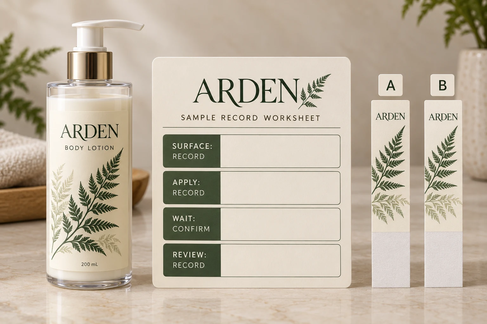

Identify the surface before naming a preferred adhesive
Start with the actual container material and finish. A bottle described as glass may have a coating. Two visually similar plastic bottles can come from different suppliers or have different surface treatments. Record what is known and ask the container supplier about the rest.
Keep the proposed label construction identifiable too: face stock, adhesive, liner and protective finish, with the supplier's sample or specification reference. “The clear one” is a useful description at the design table and an inadequate identifier when another person tries to repeat the evaluation.
Our material comparison guide helps frame that broader construction discussion. This article addresses the narrower question of whether your sample observations are comparable enough to guide a release.
Agree preparation without guessing a cleaning method
Avery's label application guidance discusses clean, dry surfaces, avoiding contamination of the adhesive, applying pressure and allowing time after application. These are relevant considerations from a label manufacturer. Its specific cleaning advice and waiting recommendation should not automatically become the procedure for every coated cosmetic container or custom adhesive.
Ask the bottle and label suppliers which preparation method is appropriate for the surface being evaluated. Record that method, including any unresolved compatibility question. Do not introduce a solvent simply because a general application page mentions one.
Also distinguish a planned clean application from a contamination scenario. If filling residue is a genuine operational concern, define it as a separate evaluation condition with the responsible team. Do not accidentally contaminate one sample and then interpret its result as a general material comparison.
Separate applying, waiting and using
Record when the label was applied and the relevant conditions. Ask the supplier what waiting or conditioning is appropriate before the planned observation, and identify whether the observation concerns initial handling, later adhesion or performance during use.
Those are related questions, not interchangeable names for a single test. An immediate impression should not quietly become the result for a later-use requirement. Equally, a long wait does not establish suitability for a wet or oily environment that was never evaluated.
Use the supplier's instructions for the selected construction. This guide does not set a universal dwell time, application temperature or acceptance force. If an evaluation requires a formal test method, agree that method and the necessary equipment with the relevant technical party rather than presenting a hand check as a certified result.
Build a record that explains the comparison
The following is an editorial sample-planning tool. Its purpose is to make assumptions visible, not to replace a material supplier's test method.
| Field | Record before review | Decision it supports |
|---|---|---|
| Sample identity | Construction reference, label dimensions and sample ID | Confirms which candidate is being evaluated |
| Container | Supplier, resin or glass description, coating and relevant batch reference | Identifies the surface and any uncertainty |
| Preparation | Agreed process and any deviation | Separates intended conditions from accidental differences |
| Application | Method, person or equipment, time and relevant conditions | Makes the application event traceable |
| Waiting | Supplier-defined instruction and actual observation interval | Shows whether the intended stage was reached |
| Observation | Defined use condition, location and what was seen | Keeps appearance, edge behavior and other findings distinct |
| Disposition | Reviewer, unresolved issue and next agreed action | Prevents an observation becoming an unexplained approval |
If two samples were not prepared under comparable conditions, say so. The next useful action may be to repeat a focused comparison, not to choose the more reassuring photograph.

Change one relevant condition at a time
Suppose the team wants to compare two constructions on one established bottle. Keep the intended container and agreed application procedure consistent, identify each sample and review it under the same defined conditions. Ask the supplier to help explain any material difference before turning the observation into a purchasing conclusion.
Now consider a different question: whether the established construction works on a new coated bottle. Changing the adhesive and the bottle together makes interpretation harder. A comparison plan should distinguish the surface change from a construction change where practical, with any limitations recorded.
This is about clearer reasoning, not a requirement to build an elaborate laboratory for every small project. A simple, well-identified sample record can be proportionate. A high-consequence application or unresolved result can justify more specialist evaluation. The technical parties should decide what evidence the intended use actually needs.
Keep the release connected to its limits
Record what the agreed sample review covered and what it did not. If the samples were checked only on a clean, dry bottle, do not describe them as having passed all bathroom handling conditions. If the bottle finish or label construction changes later, ask which conclusions remain applicable.
For wet handling and squeeze scenarios, see the shampoo and body wash label checklist. For rolls waiting before application, use the separate printed label storage guide. Neither topic should disappear into the phrase “sample approved.”
Send a sample question the printer can investigate
For a cosmetic bottle label inquiry, provide the container reference and finish, proposed dimensions, artwork, quantity by design and intended application method. Add the sample IDs, preparation and timing record, observations and the specific decision still unresolved.
Use the inquiry form to prepare your message, then send photos and records as attachments through email or WhatsApp. The form does not upload or send those attachments automatically.
The goal is not to collect the largest pile of samples. It is to know what each sample can honestly tell the person approving the order.